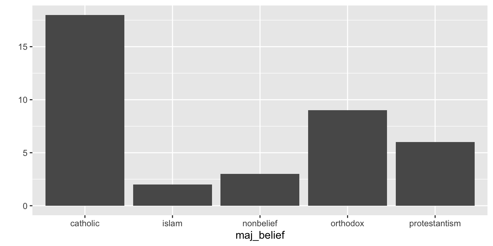
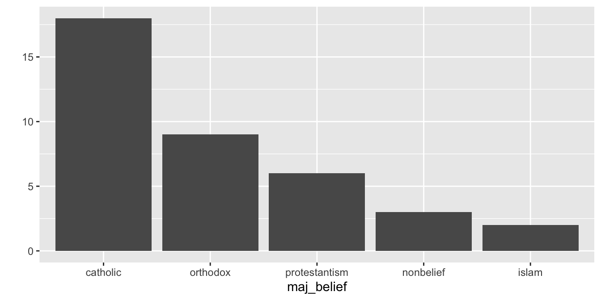
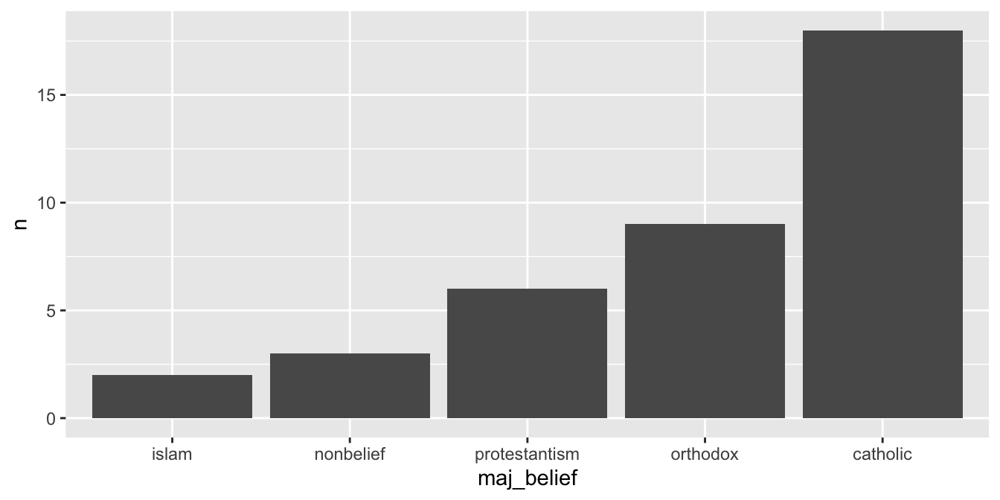

17 Práce s faktory
S faktory jsme se již setkali na začátku naší cesty (Sekce 4.2) a přišel čas navštívit znovu. Faktory představují hlavní typ objektů pro práci s kategorickými proměnnými a jsou široce využívané od vizualizaci dat po statistické modelování. Vyplatí se proto na ně podívat blíže. K jejich manipulaci nám poslouží balíček forcats, který je součástí Tidyverse.
17.1 Vytváření faktorů
Náš dataframe countries obsahuje řadu kategorických proměnných, mezi nimi také maj_belief, tedy převažujícící náboženská skupina v dané zemi. Tato proměnná je uložená jako objekt typu character:
class(countries$maj_belief)[1] "character"Pro převedení této proměnná stačí použe využít funkce as.factor(). Výsledný faktor bude obsahovat úrovně (levels) odpovídající pozorovaným hodnotám původní proměnné. Vzpomeňte si, že faktory nemohou nabývat jiných hodnot, než těch specifikovaných při jejich vzniku:
countries$maj_belief <- as.factor(countries$maj_belief)
class(countries$maj_belief)[1] "factor"levels(countries$maj_belief)[1] "catholic" "islam" "nonbelief" "orthodox"
[5] "protestantism"Všimněme si, že pořadí jednotlivých úrovní odpovídá abecedními pořadí. Kromě funkce as.factor() je možné pro vytvoření faktoru využít také Tidyverse funkci as_factor(). Primárním rozdílem mezi nimi je, že funkce as.factors() uspořádá úrovně v abecedním pořadí, zatímco funkce as_factor() v pořadí, v jakém se jednotlivé kategorie objeví v datech. Primární výhodou druhé z funkcí je, že dojde ke stejnému výsledku bez ohledu na jazyk operačního systému.
17.2 Pořadí úrovní
Jednou ze situací, ve kterých je nutné převést kategorické proměnné na faktory, je vizualizace dat. Pokud by nás zajímalo náboženské složení zemí v našem datasetu, můžeme data vizualizovat pomocí funkce qplot() (o které se dozvíme více v příštích kapitolách):
qplot(x = maj_belief, data = countries)Warning: `qplot()` was deprecated in ggplot2 3.4.0.
Výsledny graf je funkční, nicméně nepříliš estetický. Kategorie v grafu jsou seřezany podle pořadí úrovní našeho faktoru, vhodnější by ale bylo, aby byly seřazeny sestupně podle frekvence výskytu.
Funkce pro vizualizaci dat převádí kategorické proměnné na faktory automaticky.
Pokud chceme změnit pořadí kategorií v grafu, nestačí pouze seřadit řádky datasetu, je třeba změnit pořadí úrovní faktoru. Způsobů, jak řadit úrovně je více. Tím základním je specifikovat pořadí úrovní explicitně, pomocí funkce fct_relevel(). Ta přijímá jako první argument faktor, který chceme transformovat a dále jednolivé úrovně v pořadí, v jakém je chceme uložit.
countries$maj_belief <- fct_relevel(countries$maj_belief,
"catholic",
"orthodox",
"protestantism",
"nonbelief",
"islam")
qplot(x = maj_belief, data = countries)
A je to! Sloupce jsou seřazeny. Ovšem manuálně vypisovat všechny kategorie je zdlouhavá záležitost. Lepší variantou je nechat R, aby pořadí úrovní určilo za nás. K tomu nejdříve budeme muset spočítat frekvenci výskytu jednotlivých kategorií. K tomu je možné využít již nám dobře známou kombinaci funkcí group_by() a summarise(). Uvnitř summarise() použijeme funkci n(), která vrátí počet pozorování v rámci dané skupiny.
countries %>%
group_by(maj_belief) %>%
summarise(n = n())# A tibble: 5 × 2
maj_belief n
<fct> <int>
1 catholic 18
2 orthodox 9
3 protestantism 6
4 nonbelief 3
5 islam 2Dalším krokem je zrušit seskupení a aplikovat funkci fct_reorder(), kde prvním argumentem je faktor a druhým proměnná, podle které úrovně faktoru seřadíme. Nakonec už jen zbývá aplikovat qplot(), tentokrát včetně argumentu y:
countries %>%
group_by(maj_belief) %>%
summarise(n = n()) %>%
ungroup() %>%
mutate(maj_belief = fct_reorder(maj_belief, n)) %>%
qplot(x = maj_belief, y = n, data = ., geom = "col")
Tento kód si zaslouží několik vysvětlivek. Zaprvé, protože se jedná o agregovaná data, je nutné specifikovat proměnnou pro osu Y(argument y). Dále je nutné fuknci qplot() říct, že výsledkem má být sloupcový graf (geom = col). Nakonec je nutné specifikovat, že náš dataframe má být dosazen do argumentu data a to pomocí placeholderu .. Vzpomeňme si, že s placeholdery jsme si již setkali, když jsme transformovali větší množství proměnných pomocí funkce across() (viz. Sekce 16.1).
count()
Pokud vám série funkci group_by() %>% summarise(n = n()) %>% ungroup() přijde zbytečně zdlouhavá, nejste sami. Autoři Tidyverse mají stejný názor a připravili pro nás proto funkci count(). Ta je v postatě je zkratkou pro výše zmíněnou sérii funkci. Následující skript tedy bude mít stejný výsledek, jako ten výše:
countries %>%
count(maj_belief) %>%
mutate(maj_belief = fct_reorder(maj_belief, n)) %>%
qplot(x = maj_belief, y = n, data = ., geom = "col")V našem posledním grafu jsou kategorie seřazené vzestupně. V našem původním datasetu jsou ovšem pořád sestupně. Pokud bychom chtěli pořadí kategorií obrátit, můžeme k tomu využít funkci fct_rev()
countries$maj_belief <- fct_rev(countries$maj_belief)
qplot(x = maj_belief, data = countries)17.3 Transformace úrovní
Kromě řazení úrovní faktoru je také často budeme chtít transformovat. Nejčastěji tak, že budeme chtít změnit název úrovně. Jednou z úrovní naší proměnné maj_belief je protestantism, jejíž název morfologicky neodpovídá ostatním. Rádi bychom proto změnili název kategorie z protestantism na protestant. K tomu nám poslouží funkce fct_recode():
countries$maj_belief <- fct_recode(countries$maj_belief,
"protestant" = "protestantism")
levels(countries$maj_belief)[1] "islam" "nonbelief" "protestant" "orthodox" "catholic" Jak je vidět, aplikace této funkce ja snadná, stačí specifikovat faktor, a v následujících argumentech poté názvy úrovni ve formátu nový název = starý název. Změnit je možné i více názvu najednou.
Kromě ručního přepisování názvů je možné měnit úrovně také programátorsky, pomocí funkce fct_relabel(). Pro hezčí vzhled našich grafů bychom například chtěli, aby název každé úrovně začínal velkým písmenem. Převedení prvních písmen na kapitálky je možné dosáhnout pomocí funkce str_to_title(). Nelze ji ale aplikovat přímo, jelikož tím bychom změnili formát proměnné z factor na character. Místo toho ji použijeme v kombinaci s fct_relabel(). Prvním argument je faktor samotný, druhým poté funkce, kterou chceme na názvy úrovní aplikovat:
countries$maj_belief <- fct_relabel(countries$maj_belief, str_to_title)
levels(countries$maj_belief)[1] "Islam" "Nonbelief" "Protestant" "Orthodox" "Catholic" Poslední transformací, kterou si zde ukážeme, je kolapsování kategorií. I to lze provádět jak ručně, tak programátorsky. První variantou je fct_collapse(), pomocí které můžeme například sloučit existující kategorie Protestant, Catholic a Orthodox do nové kategorie Christian:
countries$maj_belief_collapsed <- fct_collapse(countries$maj_belief,
Christianity = c("Protestant",
"Catholic",
"Orthodox"))
levels(countries$maj_belief_collapsed)[1] "Islam" "Nonbelief" "Christianity"Alternativou je slučování na základě četností pomocí funkce fct_lump(). Pro sloučení všech kategorií, kromě tří nejpočetnějších lze využít argument n:
countries$maj_belief_n <- fct_lump(countries$maj_belief,
n = 3,
other_level = "Other")
levels(countries$maj_belief_n)[1] "Protestant" "Orthodox" "Catholic" "Other" Obdobně, pro sloučení všech kategorií, které netvoří alespoň 20 % všech pozorovaných hodnot, lze využít argument prop:
countries$maj_belief_prop <- fct_lump(countries$maj_belief,
prop = 0.2,
other_level = "Other")
levels(countries$maj_belief_prop)[1] "Orthodox" "Catholic" "Other"